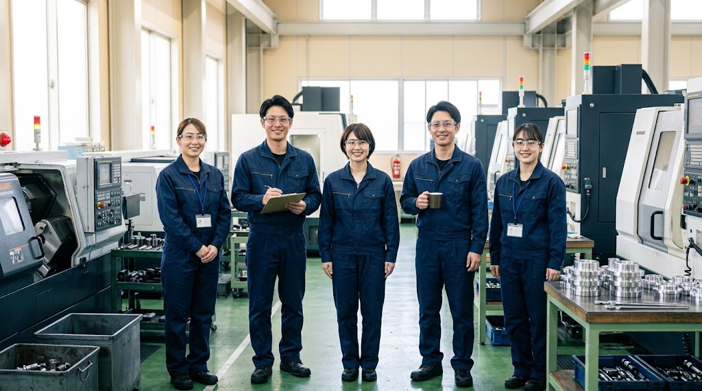
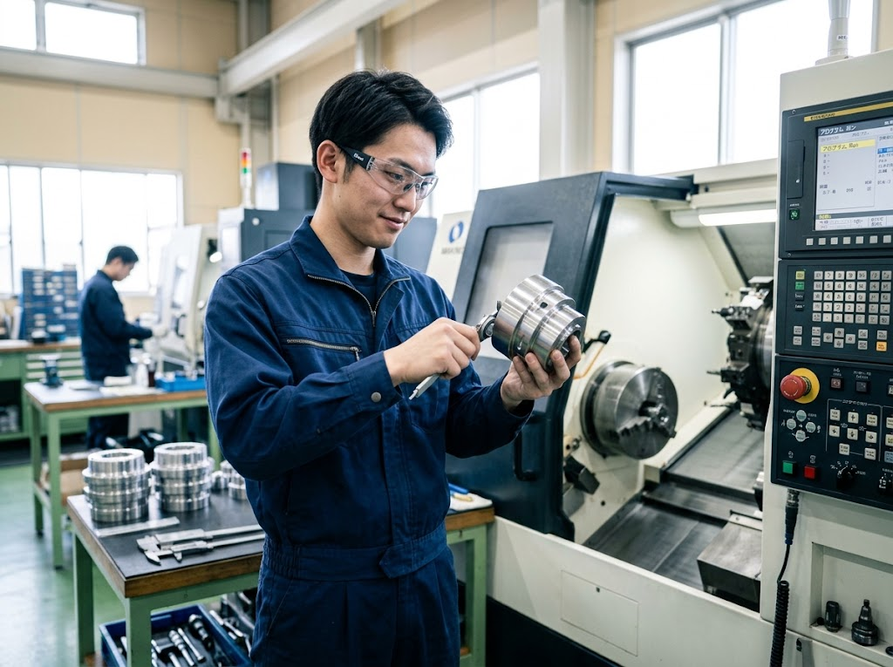
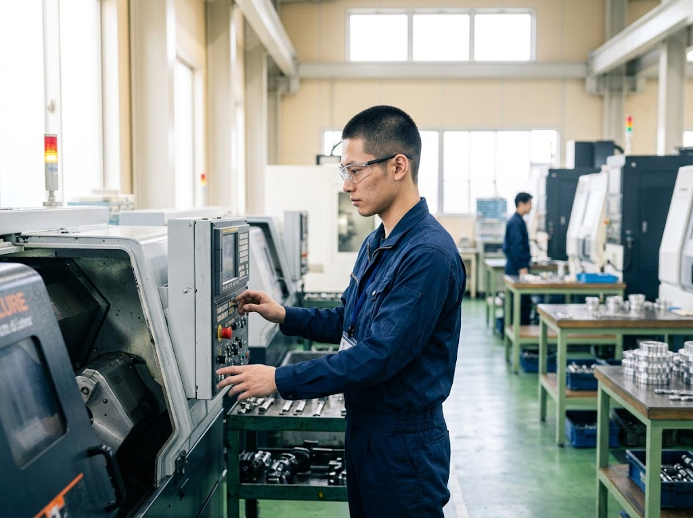
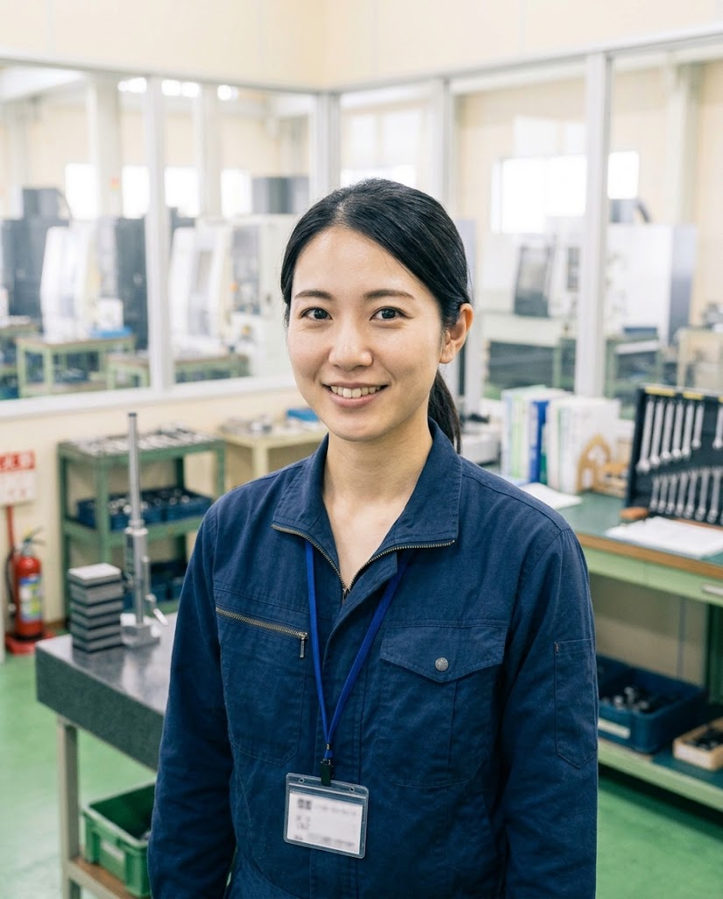
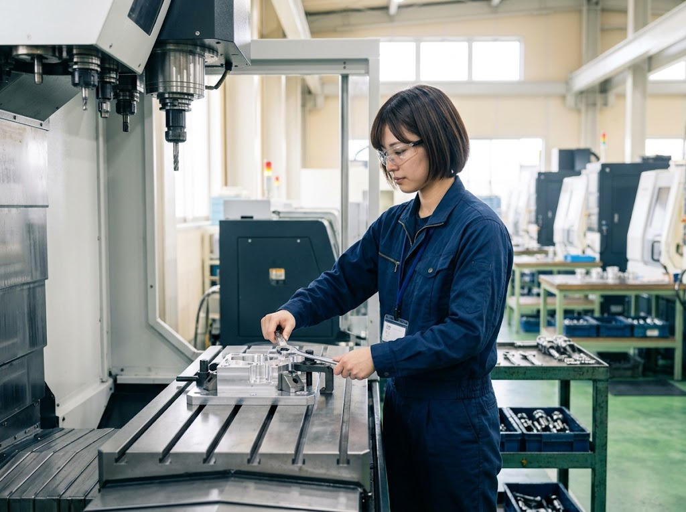
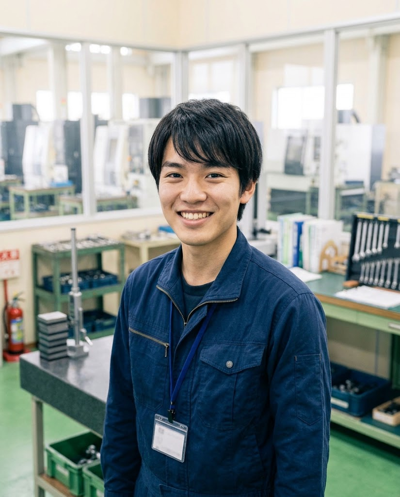
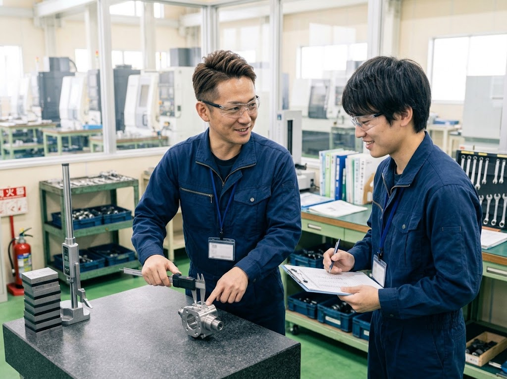
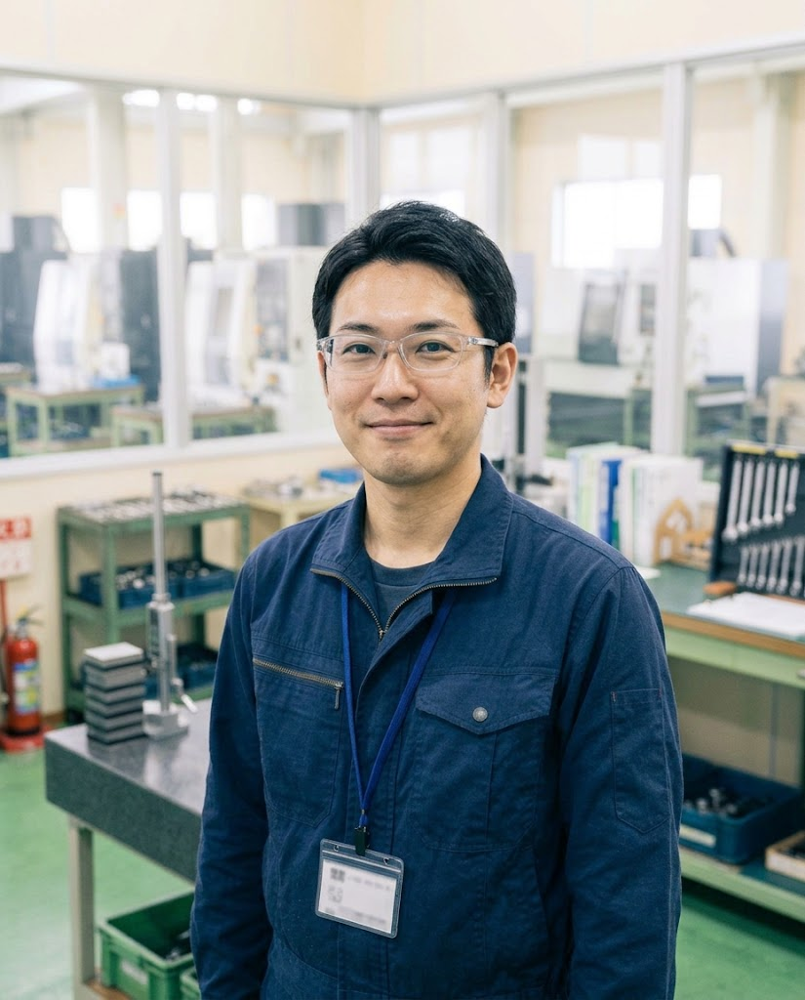
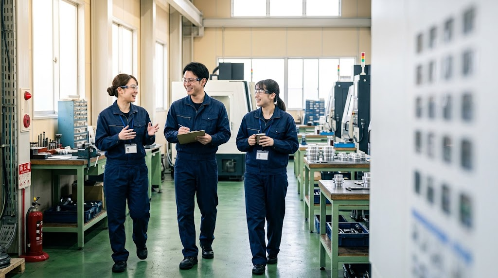
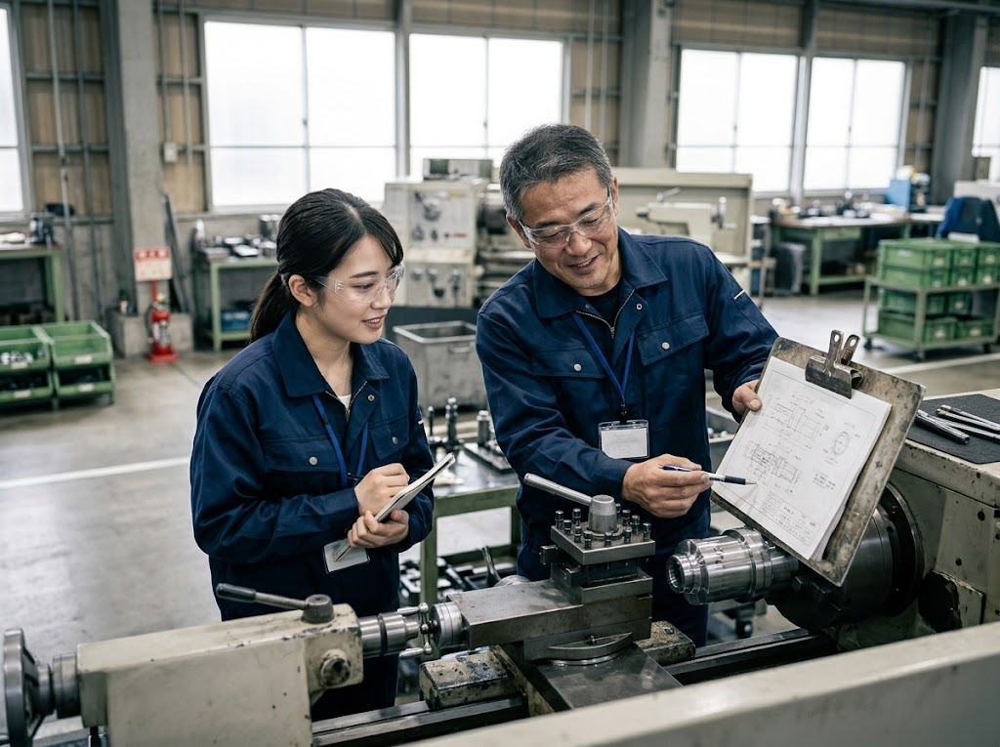

NC旋盤オペレーター
丸い部品を削る機械を担当します。工具を選び、プログラムを確かめて、削った部品を測ります。









OUR WORK
私たちの仕事は、図面に描かれた形を、
機械を使って金属から削り出すことです。
JOBS
丸い部品を削る機械を担当します。工具を選び、プログラムを確かめて、削った部品を測ります。
四角い部品や複雑な形を削ります。材料を機械に正しく固定するところから担当します。
できあがった部品の寸法を測り、図面どおりかを確かめます。会社の品質を守る仕事です。
ONE DAY
NC旋盤オペレーターのある1日です。
VOICE
※掲載している声は、制作サンプル用に作成したものです。
仕事のやりがい
最初は図面の読み方も分かりませんでしたが、先輩が横について一つずつ教えてくれました。自分で削った部品が検査に合格したときの達成感は、今でも忘れられません。
仕事のやりがい
細かい作業が好きで、ものづくりに興味があり転職しました。小さな違いを見つけるのは大変ですが、自分の確認が会社の信用につながると思うと、背筋が伸びます。
仕事のやりがい
他社で旋盤を経験してから入社しました。5軸加工機など新しい設備に挑戦させてもらえるのが魅力です。今は後輩に教える立場にもなりました。
NUMBERS
※数字はすべて仮置きです。

GROWTH
技能検定(機械加工)などの受験費用は、会社が負担します。合格すると資格手当がつきます。
BENEFITS
内容は仮置きです。
REQUIREMENTS
| 仕事内容 | NC旋盤を使った金属部品の切削加工、寸法の測定 |
|---|---|
| 応募資格 | 学歴不問・未経験歓迎(経験者は優遇) |
| 給与 | 月給 21万円〜(未経験の場合)/経験者は 26万円〜 経験・能力を考慮して決めます |
| 勤務地 | 本社工場(大阪府東大阪市精工町1-2-3) |
| 勤務時間 | 8:00〜17:30(休憩90分) |
| 休日・休暇 | 土日祝(会社カレンダーによる)、夏季・年末年始、有給休暇 |
| 待遇 | 昇給年1回、賞与年2回、各種手当(通勤・資格・家族) |
| 仕事内容 | マシニングセンタ・5軸加工機を使った金属部品の切削加工 |
|---|---|
| 応募資格 | 学歴不問・未経験歓迎(経験者は優遇) |
| 給与 | 月給 21万円〜(未経験の場合)/経験者は 27万円〜 経験・能力を考慮して決めます |
| 勤務地 | 本社工場または第2工場(東大阪市精工町) |
| 勤務時間 | 8:00〜17:30(休憩90分) |
| 休日・休暇 | 土日祝(会社カレンダーによる)、夏季・年末年始、有給休暇 |
| 待遇 | 昇給年1回、賞与年2回、各種手当(通勤・資格・家族) |
| 仕事内容 | 三次元測定機などを使った部品の寸法測定、検査記録の作成 |
|---|---|
| 応募資格 | 学歴不問・未経験歓迎 |
| 給与 | 月給 20万円〜(経験・能力を考慮して決めます) |
| 勤務地 | 本社工場(大阪府東大阪市精工町1-2-3) |
| 勤務時間 | 8:30〜17:30(休憩60分) |
| 休日・休暇 | 土日祝(会社カレンダーによる)、夏季・年末年始、有給休暇 |
| 待遇 | 昇給年1回、賞与年2回、各種手当(通勤・資格・家族) |
内容はすべて仮置きです。
SELECTION
FAQ
はい。入社した社員の多くが未経験からのスタートです。最初の1か月は基礎研修で、安全の決まりや図面の読み方から学びます。
はい、見学だけでも大歓迎です。保護者の方や学校の先生とご一緒でもかまいません。お問い合わせフォームか、お電話でお申し込みください。
寮はありませんが、遠方から入社する方には住宅手当(月2万円まで)を支給しています(仮置き)。詳しくは面接や見学のときにご説明します。
会社が支給する作業服を着て働きます。安全のため、作業中は保護メガネと安全靴を着用します。
はい。品質管理やマシニングセンタの担当として、女性の社員も活躍しています。更衣室・休憩室は男女別です。
機械が動く音や、部品を削る様子を、実際に見てみてください。
お電話でも受け付けます06-0000-0000(平日 8:30〜17:30/採用担当)
お取引のご相談はこちら